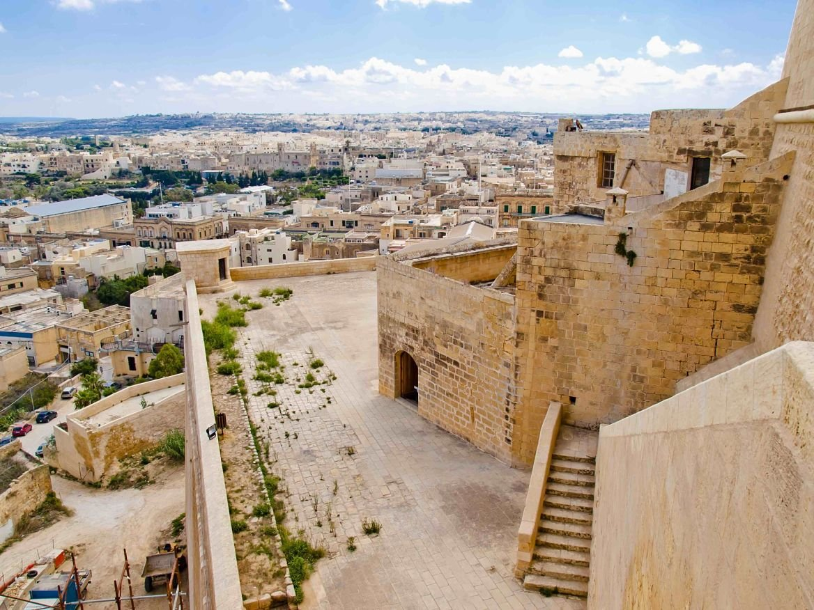

Bienvenue à Malte
Que ce soit votre première visite ou que vous soyez un habitué des lieux, Malte est une destination qui regorge d'innombrables lieux à visiter et de paysages inoubliables.
L'ile est à visiter à toute saison : en été vous pouvez profiter de ses nombreuses plages de sables fins tandis qu'en hiver le climat y est beaucoup plus doux ce qui est idéal pour visiter l'ile toute entière.
Découvrir Malte
A Malte, vous explorerez 7000 ans d'une histoire toujours aussi vivante aujourd'hui. Vous franchirez les millénaires avec une collection impressionnante de choses à découvrir. Et où que vous alliez, les paysages et l'architecture de l'île vous offriront un décor spectaculaire. Les couleurs sont frappantes, la pierre est couleur miel face au plus profond des bleus méditerranéens.
Les îles offrent une multitude de vacances sur mesure pour les personnes désireuses d'apprendre de nouvelles choses, de découvrir l'histoire ou de retrouver la forme.
